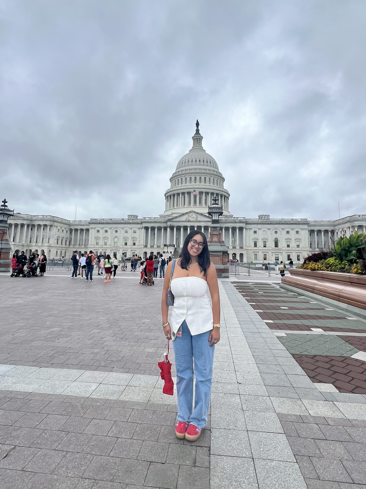
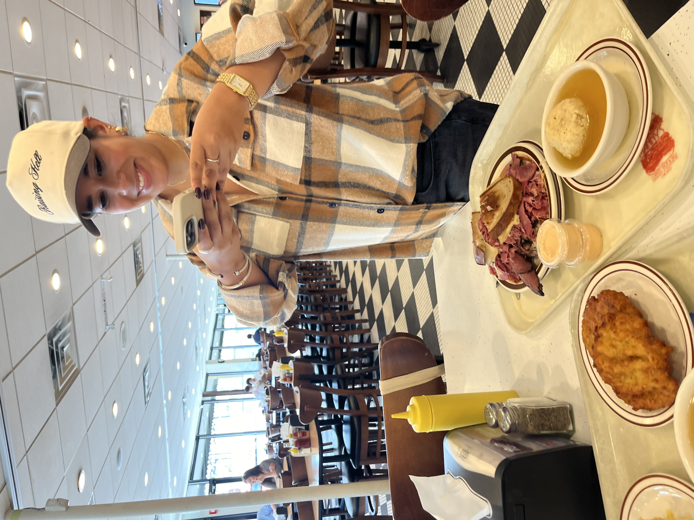

About Me...
Student

I am an undergraduate student at Northwestern University. I am majoring in Journalism and American History, and also pursuring a certificate in Integrated Marketing Communications.
Future Advocate
My career goals include working in government and politics, shaping policy and envisioning a better future of trust in elected officials, which I have viewed the importance of from my experience in Journalism. In the summer of 2024, I interned on Capitol Hill for Congressman Steny Hoyer.
Food Blogger
I enjoy trying new restaurants and documenting them on my food instagram account, @lunchwithlara_ ! I am also a member of Spoon University at Northwestern, which kickstarted my interest in food reporting and writing. Phone always eats first!